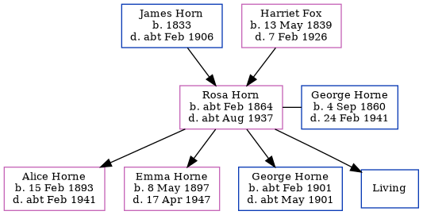

Rosa Louisa Horne (née Horn) cFeb 1864 - c1937
[ Home ] | [ Calendar ] | [ Surnames Index ] | [ Errors ] | [ Family History ]The child of James Horn (a brewer's labourer) and Harriet Fox, Rosa Horn, the first cousin three-times-removed on the father's side of Nigel Horne, was born in Ramsgate, Kent, England c. Feb 18641,2,3,4 and married her cousin on her father's side George Horne (a barman with whom she had 4 children: Alice Rose, Emma Elizabeth, George Charles and Sidney Albert, along with 1 surviving child) in St Lawrence, Thanet, Kent, England on 6 May 18912.
During her life, she was living at 62 Boundary Road in Ramsgate on 31 Mar 19017 - less than a mile from her cousin on her father's side Mary Horne who was living at 38 Queen Street in Ramsgate, her cousin on her father's side Caroline who was living at 3 Elms Park Terrace in Ramsgate -, her cousin on her father's side Florence Horne who was living at 8 Paradise in Ramsgate - and her uncle William who was living at 62 Boundary Road in Ramsgate -; at her birthplace on 2 Apr 19112 (the same place as her father had been living in 1891); and at 77 Hardres Street in Ramsgate on 19 Jun 19213 - less than a mile from her cousin on her father's side Henry Horne who was living at 29 Sussex Street in Ramsgate.
She died c. Aug 1937 in Thanet5.
Parents
- James was born in 1833
- Harriet Allen was born on 13 May 1839
Children
- Alice Rose was born on 15 Feb 1893
- Emma Elizabeth was born on 8 May 1897
- George Charles was born c. Feb 1901
Citations
- 1901 England Census Online publication - Provo, UT, USA: The Generations Network, Inc., 2005.Original data - Census Returns of England and Wales, 1901. Kew, Surrey, England: The National Archives of the UK (TNA): Public Record Office (PRO), 1901. Data imaged from the National
- 1911 England Census Online publication - Provo, UT, USA: Ancestry.com Operations, Inc., 2011.Original data - Census Returns of England and Wales, 1911. Kew, Surrey, England: The National Archives of the UK (TNA), 1911. Data imaged from the National Archives, London, England. (Marital Status: MarriedRelation to Head of House: Wife)
- 1921 Census Of England & Wales - Findmypast (was age 56 and the wife of the head of the household)
- England & Wales births 1837-2006 - Findmypast
- England & Wales deaths 1837-2007 - Findmypast
- 1911 Census for England & Wales - Findmypast (was age 48 and the wife of the head of the household)
- 1901 England, Wales & Scotland Census - Findmypast (was age 38 and the wife of the head of the household)
Notes
Note that this person appears twice as she married a relative.
Media
1911 Census for England & Wales - GBC/1911/RG14/04521/0043/2
1901 England, Wales & Scotland Census - GBC/1901/0007455218
England & Wales deaths 1837-2007 - BMD/D/1937/3/AZ/000387/118
England & Wales births 1837-2006 - BMD/B/1864/1/AZ/000614/073
Kent, Canterbury Archdeaconry marriages - GBPRS/CANT/M/97022169/2
England Marriages 1538-1973 - R_848241749/2
England Marriages 1538-1973 - R_848396662/2
Family Tree
Map
Generated by ged2site. Last updated on Jul 3, 2024
Known Issues
Parent James is listed in the residence for 2 Apr 1871, but this child is not
Apr 2, 1911: not living at same address as spouse George Horne ('Ramsgate, Kent, England'/'77 Hardres Street, Ramsgate, Kent, England')
No records of living with anyone